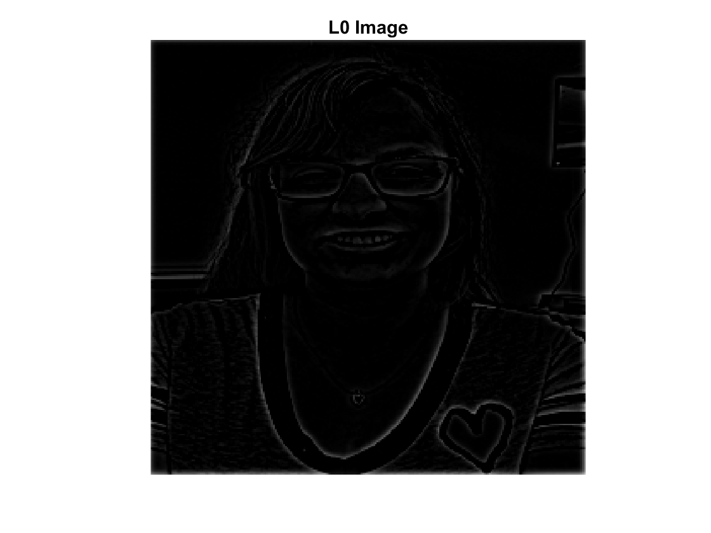

EE 152 Lab4: Multiscale Representation and Image Enhancements - Victoria Hall, 861154075
Contents
L4.1 Multiscale image representation:
Part a
G = imread('portrait.jpg'); G_gray = rgb2gray(G); figure; imshow(G_gray, 'InitialMagnification', 'fit'); title('Portrait Image'); G0 = imresize(G_gray, [256 256]); figure; imshow(G0, 'InitialMagnification', 'fit'); title('Portrait Resized to 256x256'); % G0r = G0(:,:,1); % G0g = G0(:,:,2); % G0b = G0(:,:,3); % % hist_r = hist(double(G0(:)),255); % hist_g = hist(double(G0g(:)),255); % hist_b = hist(double(G0b(:)),255); figure; bar(hist(double(G0(:)),255)); title('Histogram of Image');
Part b
g = fspecial('gaussian', 128, 1.7); % filter of half image size g_pad = padarray(g, [64 64]); % zero padding to make filter 256x256 g_fft = fftshift(fft2(g_pad)); % g_pad = padarray(g_pad, [1 1], 'replicate', 'post'); % G0_filt = imfilter(G0, g_pad); figure; imagesc(g_pad); title('Gaussian Filter Plot'); figure; imagesc(log(abs(g_fft))); title('Magnitude of Gaussian Filter Fourier Transform'); figure; imagesc(angle(g_fft)); title('Angle of Gaussian Filter Fourier Transform');
Part c
g1 = g_pad; g2 = conv2(g_pad, g_pad); g3 = conv2(g2, g_pad); G1 = imfilter(G0, g1); % blurred image G1_fft = fftshift(fft2(G1)); G1_size = imresize(G1, [128 128]); figure; imshow(G1, 'InitialMagnification', 'fit'); title('Blurred Image G1'); figure; imagesc(log(abs(G1_fft))); title('Blurred Image G1 Fourier Transform Magnitude'); figure; imshow(G1_size, 'InitialMagnification', 'fit'); title('G1 Scaled to 128x128'); G2 = imfilter(G1, g2); % blurred image G2_fft = fftshift(fft2(G2)); G2_size = imresize(G2, [64 64]); figure; imshow(G2, 'InitialMagnification', 'fit'); title('Blurred Image G2'); figure; imagesc(log(abs(G2_fft))); title('Blurred Image G2 Fourier Transform Magnitude'); figure; imshow(G2_size, 'InitialMagnification', 'fit'); title('G2 Scaled to 64x64'); G3 = imfilter(G2, g3); % blurred image G3_fft = fftshift(fft2(G3)); G3_size = imresize(G3, [32 32]); figure; imshow(G3, 'InitialMagnification', 'fit'); title('Blurred Image G3'); figure; imagesc(log(abs(G3_fft))); title('Blurred Image G3 Fourier Transform Magnitude'); figure; imshow(G3_size, 'InitialMagnification', 'fit'); title('G3 Scaled to 32x32');

Part d
L0 = imsubtract(G0, G1); L1 = imsubtract(G1, G2); L2 = imsubtract(G2, G3); L0_fft = fftshift(fft2(L0)); L1_fft = fftshift(fft2(L1)); L2_fft = fftshift(fft2(L2)); L0_size = imresize(L0, [128 128]); L1_size = imresize(L1, [64 64]); L2_size = imresize(L2, [32 32]); figure; imshow(L0, 'InitialMagnification', 'fit'); title('L0 Image'); figure; imagesc(log(abs(L0_fft))); title('L0 Fourier Transform Magnitude'); figure; imshow(L0_size, 'InitialMagnification', 'fit'); title('L0 Scaled to 128x128'); figure; imshow(L1, 'InitialMagnification', 'fit'); title('L1 Image'); figure; imagesc(log(abs(L1_fft))); title('L1 Fourier Transform Magnitude'); figure; imshow(L1_size, 'InitialMagnification', 'fit'); title('L1 Scaled to 64x64'); figure; imshow(L2, 'InitialMagnification', 'fit'); title('L2 Image'); figure; imagesc(log(abs(L2_fft))); title('L2 Fourier Transform Magnitude'); figure; imshow(L2_size, 'InitialMagnification', 'fit'); title('L2 Scaled to 32x32');

Part e
C = zeros(256,256,3); for i = 1:3 if i == 1 [CA1, CH1, CV1, CD1] = dwt2(G0, 'haar', 'mode', 'per'); CT1 = [CA1 CV1; CH1 CD1]; elseif i == 2 [CA2, CH2, CV2, CD2] = dwt2(CA1, 'haar', 'mode', 'per'); CT2 = [CA2 CV2; CH2 CD2]; CT1 = [CT2 CV1; CH1 CD1]; elseif i ==3 [CA3, CH3, CV3, CD3] = dwt2(CA2, 'haar', 'mode', 'per'); CT3 = [CA3 CV3; CH3 CD3]; CT2 = [CT3 CV2; CH2 CD2]; CT1 = [CT2 CV1; CH1 CD1]; end C(:,:,i) = CT1; figure; colormap gray; imagesc(C(:,:,i)); title(['Wavelet Coefficients Plot ' num2str(i)]); end

Part f
CAt2 = idwt2(CA3, CH3, CV3, CD3, 'haar', 'mode', 'per'); CAt1 = idwt2(CAt2, CH2, CV2, CD2, 'haar', 'mode', 'per'); CAt0 = idwt2(CAt1, CH1, CV1, CD1, 'haar', 'mode', 'per'); figure; colormap gray; imagesc(CAt0); title('Image Reconstructed from Wavelet Coefficients');
Part g
z32 = zeros(32,32); z64 = zeros(64,64); z128 = zeros(128,128); % for CA3 CAt2 = idwt2(CA3, z32, z32, z32, 'haar', 'mode', 'per'); CAt1 = idwt2(CAt2, z64, z64, z64, 'haar', 'mode', 'per'); CAt0 = idwt2(CAt1, z128, z128, z128, 'haar', 'mode', 'per'); CAt0_fft = fftshift(fft2(CAt0)); figure; colormap gray; imagesc(CAt0); title('Reconstructed Image Using CA3'); figure; imagesc(log(abs(CAt0_fft))); title('Fourier Transform Magnitude For Reconstructed Image Using CA3'); % for CH3 CAt2 = idwt2(z32, CH3, z32, z32, 'haar', 'mode', 'per'); CAt1 = idwt2(CAt2, z64, z64, z64, 'haar', 'mode', 'per'); CAt0 = idwt2(CAt1, z128, z128, z128, 'haar', 'mode', 'per'); CAt0_fft = fftshift(fft2(CAt0)); figure; colormap gray; imagesc(CAt0); title('Reconstructed Image Using CH3'); figure; imagesc(log(abs(CAt0_fft))); title('Fourier Transform Magnitude For Reconstructed Image Using CH3'); % for CV3 CAt2 = idwt2(z32, z32, CV3, z32, 'haar', 'mode', 'per'); CAt1 = idwt2(CAt2, z64, z64, z64, 'haar', 'mode', 'per'); CAt0 = idwt2(CAt1, z128, z128, z128, 'haar', 'mode', 'per'); CAt0_fft = fftshift(fft2(CAt0)); figure; colormap gray; imagesc(CAt0); title('Reconstructed Image Using CV3'); figure; imagesc(log(abs(CAt0_fft))); title('Fourier Transform Magnitude For Reconstructed Image Using CV3'); % for CD3 CAt2 = idwt2(z32, z32, z32, CD3, 'haar', 'mode', 'per'); CAt1 = idwt2(CAt2, z64, z64, z64, 'haar', 'mode', 'per'); CAt0 = idwt2(CAt1, z128, z128, z128, 'haar', 'mode', 'per'); CAt0_fft = fftshift(fft2(CAt0)); figure; colormap gray; imagesc(CAt0); title('Reconstructed Image Using CD3'); figure; imagesc(log(abs(CAt0_fft))); title('Fourier Transform Magnitude For Reconstructed Image Using CD3'); % for CH2 CAt1 = idwt2(z64, CH2, z64, z64, 'haar', 'mode', 'per'); CAt0 = idwt2(CAt1, z128, z128, z128, 'haar', 'mode', 'per'); CAt0_fft = fftshift(fft2(CAt0)); figure; colormap gray; imagesc(CAt0); title('Reconstructed Image Using CH2'); figure; imagesc(log(abs(CAt0_fft))); title('Fourier Transform Magnitude For Reconstructed Image Using CH2'); % for CV2 CAt1 = idwt2(z64, z64, CV2, z64, 'haar', 'mode', 'per'); CAt0 = idwt2(CAt1, z128, z128, z128, 'haar', 'mode', 'per'); CAt0_fft = fftshift(fft2(CAt0)); figure; colormap gray; imagesc(CAt0); title('Reconstructed Image Using CV2'); figure; imagesc(log(abs(CAt0_fft))); title('Fourier Transform Magnitude For Reconstructed Image Using CV2'); % for CD2 CAt1 = idwt2(z64, z64, z64, CD2, 'haar', 'mode', 'per'); CAt0 = idwt2(CAt1, z128, z128, z128, 'haar', 'mode', 'per'); CAt0_fft = fftshift(fft2(CAt0)); figure; colormap gray; imagesc(CAt0); title('Reconstructed Image Using CD2'); figure; imagesc(log(abs(CAt0_fft))); title('Fourier Transform Magnitude For Reconstructed Image Using CD2'); % for CH1 CAt0 = idwt2(z128, CH1, z128, z128, 'haar', 'mode', 'per'); CAt0_fft = fftshift(fft2(CAt0)); figure; colormap gray; imagesc(CAt0); title('Reconstructed Image Using CH1'); figure; imagesc(log(abs(CAt0_fft))); title('Fourier Transform Magnitude For Reconstructed Image Using CH1'); % for CV1 CAt0 = idwt2(z128, z128, CV1, z128, 'haar', 'mode', 'per'); CAt0_fft = fftshift(fft2(CAt0)); figure; colormap gray; imagesc(CAt0); title('Reconstructed Image Using CV1'); figure; imagesc(log(abs(CAt0_fft))); title('Fourier Transform Magnitude For Reconstructed Image Using CV1'); % for CD1 CAt0 = idwt2(z128, z128, z128, CD1, 'haar', 'mode', 'per'); CAt0_fft = fftshift(fft2(CAt0)); figure; colormap gray; imagesc(CAt0); title('Reconstructed Image Using CD1'); figure; imagesc(log(abs(CAt0_fft))); title('Fourier Transform Magnitude For Reconstructed Image Using CD1');